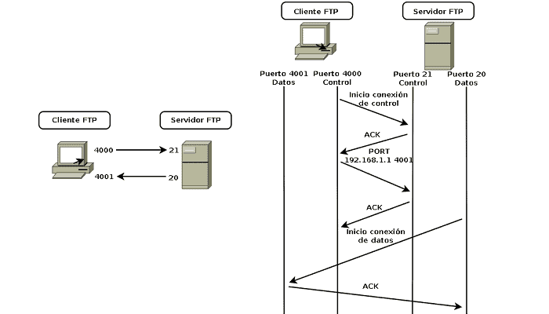
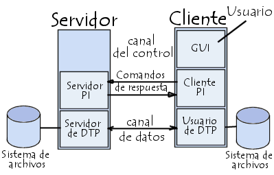

Funcionamiento
Se encarga de solicitar al usuario mediante el servidor una comunicación, esto se realiza mediante el puerto 21 posteriormente se envía las acciones a llevar a cabo con los datos, como paramentos de conexión y de gestión. Ahora bien, para la trasferencia de información del servidor al usuario, inicia el servidor por el puerto 20 y después de un buen rato esperando a que se transfiera la información se envían los archivos correspondientes a los parámetros indicados.
Entidades que intervienen en la transferencia de archivos
Hay dos entidades que intervienen en la transferencia de archivos tanto en el servidor como en el cliente.
- El intérprete de protocolo: Intercambia los comandos del protocolo de tal forma que para la parte de clientes las operaciones que el usuario solicita a través de la interfaz de usuario, el intérprete las convierte en una secuencia adecuadas de comando FTP y se envían al servidor. Por la parte del servidor se interpretan los comandos recibidos, se generan las respuestas correspondientes y se envían al cliente. El proceso de transferencia de datos: Se encarga de intercambiar los datos que deben transferirse, como tal el contenido o un listado de los directorios. Tanto en la parte del cliente como en la del servidor ambos procesos interactúan directamente con el sistema de ficheros locales para leer sus datos. Por lo tanto, los dos intérpretes de protocolo se comunican mediante una conexión de TCP llamada conexión de control.
Comandos y respuestas
- Comandos FTP: Se representa por medio de un código de comando de hasta cuatro letras y puede estar en mayúsculas o minúsculas, pueden estar separados por espacios y con un final de línea. Algunos ejemplos de estos comandos son:
- Nombre del usuario (USER): Identificador del usuario esto con la finalidad de acceder a los archivos, suele ser el primer comando que envía el cliente.
- Contraseña (PASS): Es la contraseña que necesita el servidor para verificar la identidad del usuario.
- Cuenta (ACCT): El usuario puede proporcionar una identificación de cuenta, como por ejemplo almacenar archivos, entonces el servidor hará saber que necesita esa información enviado una respuesta.
- Reinicializar (REIN): El servidor reinicializa la sesión olvidando la identidad del usuario y devuelve los parámetros de tal forma que la sesión queda en el mismo estado en que se encontraba justo después de establecer la conexión de control.
- Acabar la sesión (QUIT): El servidor lo que realiza es dar la sesión por terminadas para finalizarla y cerrar la conexión de control. Comandos de parametros de transferencia:
- Estructura de fichero (STRU): Este comando especifica como estarán estructurados los ficheros que deben transferirse.
- Modo de transmisión (MODE): El argumento indica cómo se transmitirán los archivos.
- Tipo de representación (TYPE): Este comando especifica cómo se representarán los datos de los ficheros que deben transferirse. Para ello consta de un proceso en el cual debe convertir el contenido de los archivos en una representación especificada, y el proceso que los recibe, debe convertirlos en su representación local.
- Puerto de datos (PORT): Este comando el cliente indica cuál es su puerto de datos no obstante en caso de que el puerto sea diferente el servidor debe establecer la conexión de datos en el puerto especificado, en caso contrario de que se halla establecido con otro puerto el servidor debe cerrarlo.
- Puerto Pasivo (PASV): Este comando se utiliza en las transferencias entre servidores. El cliente debe establecer conexiones de control con los dos servidores, enviar un comando PASV a uno de los mismos y pasar la dirección devuelta al otro comando PORT.
- Obtener (RETR): Este comando es la operación de transferencia de ficheros del servidor hacia el cliente, el proceso que envía los datos puede insertar un tipo especial de bloque denominado marca de reanudación.
- Almacenar (STOR): Esta es la operación de transferencia de ficheros del cliente ya que como tal será enviado hacia el servidor. En dado caso que si el fichero no existe se puede crear.
- Si tiene una línea: La respuesta se representa con el código numérico seguido del carácter espacio y posteriormente el texto y un final de línea.
- Si tiene más de una línea: La primera se representa con el código numérico seguido del carácter “-”.
Respuestas FTP: Constan de un código numérico de tres dígitos decimales, que permite al intérprete de protocolo cliente saber el resultado de la operación, seguido de un texto explicativo destinado al usuario humano.
